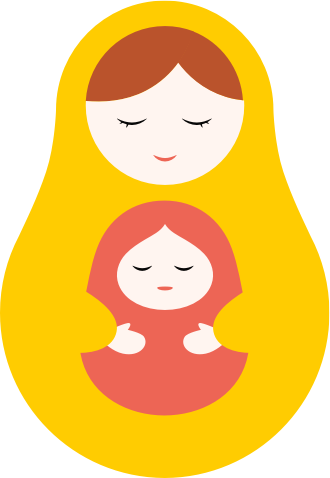

我能生出健康的寶寶嗎？
如何健康安全的懷孕？
生小孩需要花費很多錢嗎？

Good Pregnant
政府開放資料 X 好想工作室 X 祝你好孕
每個女人都有機會成為一位母親，從懷孕時期的忐忑不安到初為人母的緊張，都是女性可能遇到的問題。「我能在這個年紀生出健康的寶寶嗎？」 、「我是否有足夠的能力作一個好的養育者？」，這些懷疑的聲音，也可能讓這件偉大、快樂的事變得恐懼不安。我們希望可以透過網路資訊的公 開性與傳播性，一起探討大家普遍會有的疑慮，希望不管是女性、政府，甚至是一般大眾，都能對懷孕這件事有更完整的認知，讓女性們也可以更堅定的面對， 讓整個社會成為更安全、更快樂的生產環境。
01.「我能生出健康的寶寶嗎？」
懷孕的時候，孕婦的健康也是小孩的健康，要怎麼在懷孕期間保持健康與安全是重要的課題， 我們整理了許多資料與建議，讓孕婦們知道在懷孕期間可以做些什麼來得到協助，或是更了解關於健康與護理的知識。
02.「如何健康安全的懷孕？」
懷孕的時候，孕婦的健康也是小孩的健康，要怎麼在懷孕期間保持健康與安全是重要的課題， 我們整理了許多資料與建議，讓孕婦們知道在懷孕期間可以做些什麼來得到協助，或是更了解關於健康與護理的知識。
03.「生小孩需要花費很多錢嗎？」
許多人對生小孩卻步有很大的因素是經濟考量，然而，究竟生一個小孩要多少錢呢？ 我們試著幫大家計算從準備懷孕到生產，還有寶寶初期可能產生的花費，希望能幫助準媽媽們在進行生育計畫時，能有更周全的準備。